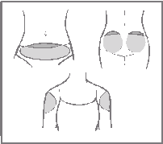
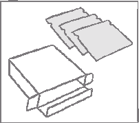
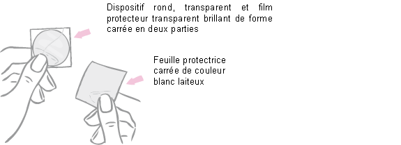
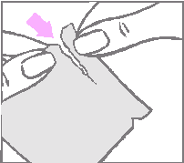
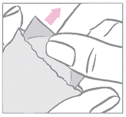
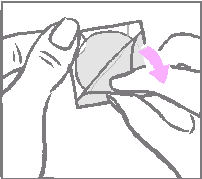
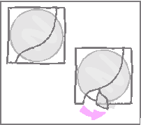
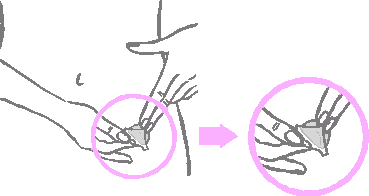
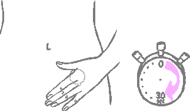
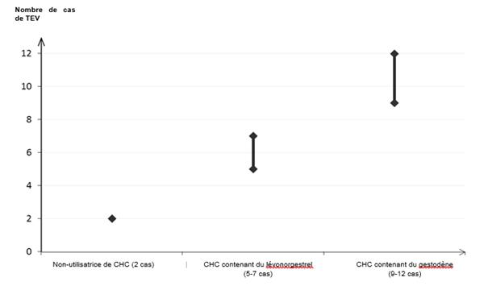

RÉSUMÉ DES CARACTÉRISTIQUES DU PRODUIT
ANSM - Mis à jour le : 26/09/2014
 Ce médicament fait l’objet d’une surveillance supplémentaire qui permettra l’identification rapide de nouvelles informations relatives à la sécurité. Les professionnels de la santé déclarent tout effet indésirable suspecté. Voir rubrique 4.8 pour les modalités de déclaration des effets indésirables.
Ce médicament fait l’objet d’une surveillance supplémentaire qui permettra l’identification rapide de nouvelles informations relatives à la sécurité. Les professionnels de la santé déclarent tout effet indésirable suspecté. Voir rubrique 4.8 pour les modalités de déclaration des effets indésirables.
APLEEK 60 microgrammes/24 heures + 13 microgrammes/24 heures, dispositif transdermique
2. COMPOSITION QUALITATIVE ET QUANTITATIVE
Ethinylestradiol................................................................................................................................. 550 µg
Pour un dispositif transdermique de 11 cm2
Chaque dispositif transdermique libère 60 microgrammes de gestodène par 24 heures et 13 microgrammes d’éthinylestradiol (équivalent à des doses orales de 20 microgrammes) par 24 heures.
Pour la liste complète des excipients, voir rubrique 6.1.
Dispositif transdermique fin, de type matriciel, composé de cinq couches.
Le dispositif transdermique est rond, transparent et mesure 11 cm². Sur la face adhésive, le dispositif transdermique est recouvert d’un film protecteur transparent brillant de forme carrée en deux parties.
4.1. Indications thérapeutiques
Contraception hormonale féminine.
APLEEK est indiqué chez la femme en âge de procréer. La sécurité et l’efficacité ont été établies chez les femmes âgées de 18 à 45 ans.
La décision de prescrire APLEEK doit être prise en tenant compte des facteurs de risque de la patiente, en particulier les facteurs de risque de thrombo-embolie veineuse (TEV), ainsi que du rapport entre le risque de TEV associé à APLEEK et celui associé aux autres contraceptifs hormonaux combinés (CHC) (voir rubriques 4.3 et 4.4).
4.2. Posologie et mode d'administration
APLEEK est utilisé sur un cycle de 28 jours (4 semaines).
Pendant trois semaines consécutives (21 jours), un nouveau dispositif transdermique est appliqué chaque semaine et le dispositif usagé est retiré. Durant la quatrième semaine, aucun dispositif transdermique n’est appliqué. Une hémorragie de privation est attendue à cette période. Une semaine après le retrait du dernier dispositif transdermique, un nouveau cycle de 4 semaines démarre avec l’application d’un nouveau dispositif transdermique (le même jour de la semaine qu’auparavant, le «Jour de Changement de Dispositif»), que l’hémorragie de privation soit terminée ou non. Voir «Troubles du cycle» en rubrique 4.4 dans le cas où l’hémorragie de privation ne survient pas. Pour connaître le schéma exact d’application/retrait du dispositif transdermique, voir «Jour de Changement de Dispositif» à la rubrique «Comment utiliser APLEEK».
Quand commencer APLEEK pour la première fois
· Si aucun contraceptif hormonal n’était utilisé au cours du cycle précédent (pendant le mois précédent)
Le dispositif transdermique doit être appliqué le premier jour du cycle (le premier jour des règles). Il est possible de commencer entre le 2ème et le 5ème jour, mais pendant le premier cycle une méthode de contraception mécanique doit être utilisée pendant les 7 jours du port du premier dispositif transdermique.
· En relais d’un contraceptif hormonal combiné (contraceptif oral combiné (COC), anneau vaginal ou autre dispositif transdermique)
Le dispositif transdermique doit être appliqué de préférence le lendemain de la prise du dernier comprimé actif du COC ou, au plus tard, le jour qui suit la période habituelle d’arrêt des comprimés, ou le jour suivant la prise du dernier comprimé placebo du précédent COC.
En cas de relais d’un anneau vaginal ou d’un autre dispositif transdermique, la femme doit appliquer le dispositif transdermique de préférence le jour du retrait du dernier anneau ou dispositif transdermique d’un cycle, mais au plus tard le jour prévu pour la nouvelle pose.
· En relais d’une contraception progestative seule (pilule progestative seule, forme injectable, implant) ou d’un système intra-utérin (SIU) contenant un progestatif
Le relais peut se faire à tout moment s’il s’agit d’une pilule minidosée (le jour du retrait s’il s’agit d’un implant ou d’un SIU ; le jour prévu pour l’injection suivante s’il s’agit d’une forme injectable). Dans tous les cas, il doit être recommandé aux femmes d’utiliser une méthode de contraception mécanique supplémentaire pendant les 7 jours du port du premier dispositif transdermique.
· Après une interruption de grossesse du premier trimestre
Dans ce cas, il est possible de commencer une contraception immédiatement. Il n’est pas nécessaire d’utiliser une méthode de contraception supplémentaire.
· Après un accouchement ou une interruption de grossesse du deuxième trimestre
Il doit être conseillé aux femmes de commencer entre le jour 21 et le jour 28 après un accouchement ou une interruption de grossesse du deuxième trimestre. En cas de démarrage plus tardif, il doit être conseillé aux femmes d’utiliser une méthode de contraception mécanique supplémentaire pendant les 7 jours du port du premier dispositif transdermique. Cependant, si un rapport sexuel a déjà eu lieu, il convient d’exclure une grossesse ou d’attendre le retour des règles avant de commencer APLEEK.
En cas d’allaitement, voir rubrique 4.6.
Comment utiliser APLEEK
APLEEK est utilisé sur un cycle de 28 jours (4 semaines), c-à-d. un dispositif transdermique par semaine pendant 3 semaines, suivies d’un intervalle de 7 jours sans dispositif. Un seul dispositif transdermique doit être utilisé à la fois. Chaque nouveau cycle démarre immédiatement après l’intervalle sans dispositif transdermique, que l’hémorragie de privation soit terminée ou non.
· Jour de Changement de Dispositif
Chaque nouveau dispositif transdermique doit être appliqué le même jour de la semaine. Ce jour s’appelle le «Jour de Changement de Dispositif». Par exemple, si le premier dispositif transdermique est appliqué un dimanche, tous les dispositifs par la suite doivent être appliqués un dimanche. Un seul dispositif transdermique doit être utilisé à la fois.
1erdispositif Jour 1 : application du 1er dispositif (pour les femmes qui débutent APLEEK pour la première fois, voir«Quand commencer APLEEK pour la première fois»)
2èmedispositif Jour 8 :retrait du 1er dispositif et application immédiate du 2éme dispositif
3èmedispositif Jour 15 :retrait du 2éme dispositif et application immédiate du 3éme dispositif
Aucun dispositif Jour 22 :retrait du 3émedispositif (aucun dispositif les jours 22 à 28)
Le dispositif transdermique est toujours retiré le même jour de la semaine («Jour de Changement de Dispositif»). Le changement de dispositif transdermique peut avoir lieu à tout moment au cours du «Jour de Changement». Les cycles suivants débutent le même«Jour de Changement», après l’intervalle de 7 jours sans dispositif transdermique (jours 22 à 28).
· Jours Sans Dispositif Transdermique
Aucun dispositif transdermique n’est porté du jour 22 (après le retrait du 3ème dispositif) jusqu’au jour 28 (soit pendant la «Semaine 4»).
L’intervalle sans dispositif transdermique entre les cycles ne doit en aucun cas dépasser 7 jours.
Si l’intervalle sans dispositif transdermique dépasse les 7 jours, IL EST POSSIBLE QUE LA FEMME NE SOIT PAS PROTÉGÉE CONTRE LE RISQUE DE GROSSESSE. Il convient de commencer un nouveau cycle en appliquant un nouveau dispositif transdermique dès que le retard de démarrage du nouveau cycle est constaté et une méthode contraceptive supplémentaire, comme un préservatif, un diaphragme ou des spermicides, doit être associée pendant les 7 premiers jours du nouveau cycle. Comme avec les COC, au-delà de l’intervalle recommandé sans contraceptif, le risque d’ovulation augmente chaque jour.
Si un rapport sexuel a eu lieu au cours d’un tel intervalle prolongé sans dispositif transdermique, la possibilité d’une grossesse doit être prise en compte.
Voir également «Que faire en cas de dispositifs transdermiques décollés, oubliés ou non remplacés».
Mode d’administration
Voie d’administration: utilisation transdermique.
Où appliquer le dispositif transdermique
Le dispositif transdermique ne doit être appliqué que sur l’un des sites d’application suivants (voir schéma ci-dessous) : abdomen, fesses, face extérieure de la partie supérieure du bras.

Les endroits où le dispositif transdermique pourrait subir une friction (p. ex. taille élastique d’un vêtement) doivent être évités.
Le dispositif transdermique doit être appliqué sur une peau propre, sèche, intacte, saine et, de préférence, sans pilosité.
APLEEK ne doit pas être appliqué sur une peau grasse, rouge, irritée, entaillée ou présentant la moindre lésion.
Les dispositifs transdermiques ne doivent pas être appliqués sur les seins.
Afin d’éviter toute interférence avec les propriétés adhésives d’APLEEK, il convient de ne pas appliquer de maquillage, de crème, de lotion, de poudre ou d’autres produits à usage local sur la zone cutanée où APLEEK est ou sera placé.
Il convient de varier l’endroit où le dispositif transdermique est appliqué. Ceci peut se faire en choisissant des endroits différents au même site d’application. Par exemple, la femme peut alterner entre le côté droit et le côté gauche de l’abdomen, entre la fesse gauche et la fesse droite ou entre la partie supérieure du bras gauche et du bras droit.
La femme peut également utiliser un site d’application différent chaque semaine (par exemple, une semaine la face extérieur du bras et, la semaine suivante, l’abdomen).
La femme doit contrôler visuellement le dispositif transdermique chaque jour pour garantir le maintien d’une adhérence correcte.
Veuillez noter :
· Un seul dispositif transdermique doit être utilisé à la fois.
· Si le dispositif transdermiqueest appliqué correctement, la femme peut prendre un bain ou une
douche comme d’habitude.
· Le dispositif transdermique transparent est protégé contre les UV / la lumière du soleil. Par conséquent, il peut être exposé au soleil et ne nécessite pas d’être recouvert par un vêtement.
En cas d’irritation cutanée
Si l’utilisation du dispositif transdermique entraîne une irritation gênante au site d’application, il doit être retiré et un nouveau dispositif transdermique doit être placé à un endroit différent. Ce dispositif doit rester en place jusqu’au prochain «Jour de Changement de Dispositif» prévu.
Comment préparer le dispositif transdermique avant l’application
APLEEK est présenté dans une boîte contenant : une notice ainsi que 3, 9 ou 18 sachets scellés, chacun contenant un dispositif transdermique APLEEK.

Le dispositif transdermique est rond et transparent.
Sur la face collante, le dispositif transdermique est recouvert d’un film protecteur transparent brillant de forme carrée en deux parties. Ce film protège la face collante, qui contient les composants actifs du dispositif transdermique. Il garantit également que la face collante conservera ses propriétés adhésives jusqu’à l’application.
Sur la face opposée, le dispositif transdermique est recouvert d’une feuille protectrice carrée de couleur blanc laiteux qui empêche le dispositif transdermique de coller au sachet.

La femme doit déchirer le bord supérieur du sachet avec ses doigts. Les perforations permettent de guider le déchirement.
La femme ne doit pas utiliser de ciseaux, ni couper, détériorer ou altérer le dispositif transdermique de quelque manière que ce soit, car cela pourrait réduire l’effet contraceptif.

Le dispositif transdermique contraceptif rond est placé entre un film protecteur transparent brillant de forme carrée en deux parties et une feuille protectrice carrée de couleur blanc laiteux. Il est important de retirer le dispositif transdermique du sachet en même temps que le film protecteur transparent et la feuille protectrice blanc laiteux. Le sachet ne doit pas être jeté. Il doit être conservé pour l’élimination du dispositif transdermique après son utilisation.

Le dispositif transdermique doit être appliqué immédiatement après l’ouverture du sachet, de la manière suivante :
Premièrement, la femme doit retirer de la face supérieure du dispositif transdermique la feuille protectrice carrée de couleur blanc laiteux en un seul morceau.

Après avoir retiré la feuille protectrice carrée de couleur blanc laiteux, qui empêche le dispositif transdermique de coller au sachet, celle-ci doit être jetée.
Ensuite, la femme doit retirer l’une des deux parties du film protecteur transparent brillant de forme carrée qui recouvre la face inférieure (collante) du dispositif transdermique rond transparent. (La face collante contient les substances actives.) La femme doit éviter de toucher la surface collante du dispositif transdermique afin de préserver ses propriétés adhésives.

En tenant le dispositif transdermique par le bord encore recouvert de la deuxième partie du film protecteur, la femme doit positionner le dispositif transdermique sur la peau à l’endroit où il sera porté.
Lorsque la moitié du dispositif transdermique est collée sur le site d’application, la deuxième partie du film protecteur doit être retirée.

La femme doit appuyer fermement sur le dispositif transdermique avec la paume de sa main pendant 30 secondes et s’assurer que les bords adhèrent bien.

Notez :Le sachet ne doit pas être jeté car il sera nécessaire pour éliminer le dispositif transdermique après son utilisation.
Élimination des dispositifs transdermiques
Voir rubrique 6.6.
Que faire en cas de dispositifs transdermiques décollés, oubliés ou non remplacés
La conduite à tenir en cas de non-respect des conseils d’application du dispositif transdermique repose sur la règle suivante :
Au moins 7 jours consécutifs d’utilisation d’un dispositif transdermique correctement appliqué sont nécessaires pour obtenir une suppression adéquate de l’axe hypothalamo-hypophyso-ovarien, base de l’efficacité contraceptive.
· Si un dispositif transdermique est partiellement ou entièrement décollé :
- pendant moins d’un jour (jusqu’à 24 heures)
Ce dispositif transdermique doit être appliqué à nouveau au même endroit ou remplacé immédiatement par un nouveau dispositif transdermique. Aucune contraception supplémentaire n’est nécessaire. Le «Jour de Changement de Dispositif» habituel de la femme reste inchangé.
- pendant plus d’un jour (24 heures ou plus),
ou si la femme ne sait pas depuis quand le dispositif transdermique est décollé :
IL EST POSSIBLE QU’ELLE NE SOIT PAS PROTÉGÉE CONTRE LE RISQUE DE GROSSESSE. Elle doit interrompre le cycle de contraception en cours et entamer un nouveau cycle immédiatement en appliquant un nouveau dispositif transdermique. Il y a désormais un nouveau «Jour 1» et un nouveau «Jour de Changement de Dispositif». Une contraception supplémentaire, comme un préservatif, un diaphragme ou des spermicides, doit être utilisée pendant la première semaine du nouveau cycle.
Un dispositif transdermique ne doit pas être appliqué à nouveau s’il n’est plus collant, s’il s’est collé à lui-même ou à une autre surface, si une autre matière s’est collé à lui ou si, auparavant, il s’est décollé partiellement ou entièrement. Si un dispositif transdermique ne peut pas être appliqué à nouveau, un nouveau dispositif transdermique doit être appliqué immédiatement. Aucun adhésif ou bandage supplémentaire ne doit être utilisé pour maintenir le dispositif transdermique APLEEK en place.
· Si la femme oublie de changer son dispositif transdermique
- au début du cycle d’utilisation du dispositif transdermique (Semaine1 / Jour 1) :
IL EST POSSIBLE QU’ELLE NE SOIT PAS PROTÉGÉE CONTRE LE RISQUE DE GROSSESSE. Elle doit appliquer le premier dispositif transdermique du nouveau cycle dès que l’oubli est constaté. Il y a désormais un nouveau « Jour de Changement de Dispositif » et un nouveau «Jour 1». Une contraception supplémentaire, comme un préservatif, un diaphragme ou des spermicides, doit être utilisée pendant les 7 premiers jours du nouveau cycle.
- au milieu du cycle d’utilisation du dispositif transdermique (Semaine 2/Jour 8 ou Semaine 3/Jour 15) :
o pendant un ou deux jours (jusqu’à 48 heures),
elle doit appliquer immédiatement un nouveau dispositif transdermique. Le dispositif suivant doit être appliqué le «Jour de Changement de Dispositif» habituel. Aucune contraception supplémentaire n’est nécessaire.
o pendant plus de deux jours (48 heures ou plus),
IL EST POSSIBLE QU’ELLE NE SOIT PAS PROTÉGÉE CONTRE LE RISQUE DE GROSSESSE. Elle doit interrompre le cycle de contraception en cours et entamer immédiatement un nouveau cycle de 4 semaines en appliquant un nouveau dispositif transdermique. Il y a désormais un nouveau «Jour de Changement de Dispositif» et un nouveau «Jour 1». Une contraception supplémentaire, comme un préservatif, un diaphragme ou des spermicides, doit être utilisée pendant une semaine.
- à la fin du cycle d’utilisation du dispositif transdermique (Semaine 4/Jour 22) :
Si la femme oublie de retirer le dispositif transdermique au Jour 22, elle doit le retirer dès que l’oubli est constaté (au plus tard le Jour 28). Ensuite, le prochain cycle doit être entamé avec un nouveau dispositif transdermique (le lendemain du Jour 28, c’est-à-dire le «Jour de Changement de Dispositif» habituel), jamais plus tard. Aucune contraception supplémentaire n’est nécessaire.
· Conséquences de dispositifs transdermiques décollés, oubliés ou non remplacés et conduite à tenir
|
Dispositifs décollés a |
Délai |
Conséquences sur l’efficacité contraceptive a |
Conduite à tenir a |
|
Dispositif décollé
|
< 24 heures |
Efficacité contraceptive assurée |
Appliquer immédiatement un nouveau dispositif transdermique Aucune contraception supplémentaire n’est nécessaire «Jour de Changement» inchangé |
|
> 24 heures |
Efficacité contraceptive compromise |
Entamer immédiatement un nouveau cycle de 4 semaines en appliquant un nouveau dispositif transdermique Utiliser une contraception supplémentaire pendant les 7 prochains joursb Noter le nouveau «Jour de Changement de Dispositif» |
|
|
Dispositifs non remplacés à tempsa |
Délai |
Conséquences sur l’efficacité contraceptive a |
Conduite à tenir a |
|
1er dispositif (Semaine 1, Jour 1) non appliqué à temps |
Intervalle sans dispositif d > 7 jours |
Efficacité contraceptive compromise |
Entamer immédiatement un nouveau cycle de 4 semaines en appliquant un nouveau dispositif transdermique Utiliser une contraception supplémentaire pendant les 7 prochains jours b Noter le nouveau «Jour de Changement de Dispositif» |
|
1er ou 2ème dispositif (Semaine 1/2 ou 2/3) non remplacé à temps |
< 48 heures |
Efficacité contraceptive assurée |
Appliquer immédiatement un nouveau dispositif transdermique Aucune contraception supplémentaire n’est nécessaire «Jour de Changement de Dispositif» inchangé |
|
> 48 heures |
Efficacité contraceptive compromise |
Entamer immédiatement un nouveau cycle de 4 semaines en appliquant un nouveau dispositif transdermique Utiliser une contraception supplémentaire pendant les 7 prochains jours b Noter le nouveau «Jour de Changement de Dispositif» |
|
|
3ème dispositif |
|
Efficacité contraceptive assuréec |
Retirer le dispositif transdermique Entamer le prochain cycle de 4 semaines le «Jour de Changement de Dispositif» habituel |
|
a Valable pour chaque cycle. b Une contraception supplémentaire est toute autre méthode de contraception non-hormonale à l’exception de la méthode du calendrier (méthode Ogino) et de la méthode des températures. c À condition que le 3ème dispositif transdermique ait été remplacé par un nouveau dispositif au plus tard le «Jour 1» habituel du nouveau cycle d’utilisation du dispositif transdermique. d Délai depuis le retrait du dernier dispositif transdermique du cycle précédent. |
|||
L’ordonnance pour la prochaine boîte doit être délivrée à temps, c-à-d.avant l’utilisation du dernier dispositif transdermique de la boîte afin d’éviter que la femme ne soit à court de dispositifs.
Modification du « Jour de Changement de Dispositif »
Si la femme souhaite modifier son «Jour de Changement de Dispositif», elle doit terminer le cycle en cours, en retirant le troisième dispositif transdermique à la date correcte. Au cours de la semaine sans dispositif transdermique, elle peut choisir un «Jour de Changement de Dispositif» plus tôt en appliquant un nouveau dispositif transdermique le jour souhaité. En aucun cas, l’intervalle sans dispositif transdermique ne doit dépasser 7 jours consécutifs.
Populations particulières
Sexe
APLEEK est indiqué uniquement chez la femme.
Femmes ménopausées
APLEEK n’est pas indiqué chez la femme ménopausée.
Indice de masse corporelle
Les données sur l'efficacité contraceptive chez les femmes ayant un indice de masse corporelle ≥ 30 kg/m2 sont limitées.
Insuffisance rénale
APLEEK n’a pas été étudié chez la femme présentant une insuffisance rénale. Aucun risque accru n’est attendu chez la femme présentant une insuffisance rénale (voir rubrique 5.2).
Insuffisance hépatique
APLEEK n’a pas été étudié chez la femme présentant une insuffisance hépatique. APLEEK est contre-indiqué chez la femme avec présence ou antécédent d’affection hépatique sévère en l’absence de normalisation des tests fonctionnels hépatiques. Voir également la rubrique 4.3.
Différences ethniques
La pharmacocinétique de l’éthinylestradiol, associé à un autre progestatif, a été étudiée chez les femmes caucasiennes, chinoises et japonaises, et aucune différence cliniquement significative n’a été observée.
La pharmacocinétique d’APLEEK n’a pas été spécifiquement étudiée chez les femmes de différents groupes ethniques. Aucun polymorphisme enzymatique n’est connu pouvant contribuer dans une large mesure au métabolisme du gestodène. Les données disponibles chez les femmes caucasiennes, noires et hispaniques n’indiquent aucune différence quant à la pharmacocinétique d’APLEEK entre les différents groupes ethniques. Les données chez les femmes asiatiques sont très limitées.
Population pédiatrique
La sécurité et l’efficacité n’ont pas été établies chez les adolescentes âgées de moins de 18 ans. L’utilisation d’APLEEK chez les enfants et les adolescentes prépubères n’est pas pertinente.
· Présence ou risque de thrombo-embolie veineuse (TEV)
o Thrombo-embolie veineuse –présence de TEV (patiente traitée par des anticoagulants) ou antécédents deTEV (ex. thrombose veineuse profonde [TVP] ou embolie pulmonaire [EP])
o Prédisposition connue, héréditaire ou acquise, à la TEV, telle qu’une résistance à la protéine C activée (PCa) (y compris une mutation du facteur V de Leiden), un déficit en antithrombine-III, un déficit en protéine C ou un déficit en protéine S
o Intervention chirurgicale majeure avec immobilisation prolongée (voir rubrique 4.4)
o Risque élevé de TEV dû à la présence de multiples facteurs de risques (voir rubrique 4.4)
· Présence ou risque de thrombo-embolie artérielle (TEA)
o Thrombo-embolie artérielle – présence ou antécédents de thrombo-embolie artérielle ( ex. infarctus du myocarde [IM]) ou de prodromes (ex. angine de poitrine)
o Affection cérébrovasculaire – présence ou antécédents d’accident vasculaire cérébral (AVC) ou de prodromes (ex. accident ischémique transitoire [AIT])
o Prédisposition connue, héréditaire ou acquise, à la TEA, telle qu’une hyperhomocystéinémie ou la présence d’anticorps anti-phospholipides (anticorps anti-cardiolipine, anticoagulant lupique)
o Antécédents de migraine avec signes neurologiques focaux
o Risque élevé de TEA dû à la présence de multiples facteurs de risque (voir rubrique 4.4) ou d’un facteur de risque sévère tel que :
- diabètes avec symptômes vasculaires
- hypertension artérielle sévère
- dyslipoprotéinémie sévère
· Affection hépatique sévère ou antécédent d’affection hépatique sévère en l’absence de normalisation des tests fonctionnels hépatiques
· Tumeur hépatique (bénigne ou maligne) évolutive ou ancienne
· Tumeur maligne hormono-dépendante connue ou suspectée (par exemple, tumeurs des organes génitaux ou seins)
· Saignements vaginaux d’origine non identifiée
· Hypersensibilité à l’une des substances actives ou l’un des excipients listés en rubrique 6.1.
4.4. Mises en garde spéciales et précautions d'emploi
En cas d’aggravation ou de survenue de l’un de ces troubles ou facteurs de risque, la nécessité d’interrompre l’utilisation d’APLEEK doit être discutée entre le médecin et la patiente.
· Troubles circulatoires
Risque de thrombo-embolie veineuse (TEV)
Le risque de TEV est augmenté chez les femmes qui utilisent un contraceptif hormonal combiné (CHC) en comparaison aux femmes qui n’en utilisent pas. Les CHC contenant du lévonorgestrel, du norgestimate ou de la noréthistérone sont associés au risque de TEV le plus faible. On ignore encore à quel niveau se situe le risque associé à APLEEK par rapport au risque associé à ces CHC. La décision d’utiliser tout autre CHC que ceux associés au risque de TEV le plus faible doit être prise uniquement après concertation avec la patiente afin de s’assurer qu’elle comprend le risque de TEV associé à APLEEK, l’influence de ses facteurs de risque actuels sur ce risque et le fait que le risque de TEV est maximal pendant la première année d’utilisation. Certaines données indiquent également une augmentation du risque lors de la reprise d’un CHC après une interruption de 4 semaines ou plus.
Parmi les femmes qui n’utilisent pas de CHC et qui ne sont pas enceintes, environ 2 sur 10 000 développeront une TEV sur une période d’un an. Cependant, chez une femme donnée, le risque peut être considérablement plus élevé, selon les facteurs de risque qu’elle présente (voir ci-dessous).
On estime[1]que sur 10 000 femmes qui utilisent un CHC contenant du gestodène entre 9 et 12 développeront une TEV sur une période d’un an ; ce nombre est à comparer à celui d’environ 6[2]chez les femmes qui utilisent un CHC contenant du lévonorgestrel.
Dans les deux cas, le nombre de TEV par année est inférieur à celui attendu pendant la grossesse ou en période post-partum.
On ignore encore à quel niveau se situe le risque associé à APLEEK par rapport au risque associé aux CHC contenant du lévonorgestrel et aux COC contenant du gestodène.
La TEV peut être fatale dans 1 à 2 % des cas.
Nombre de cas de TEV pour 10 000 femmes sur une période d’un an
De façon extrêmement rare, des cas de thrombose ont été signalés chez des utilisatrices de CHC dans d’autres vaisseaux sanguins, comme les veines et artères hépatiques, mésentériques, rénales ou rétiniennes.
Facteurs de risque de TEV
Le risque de complications thrombo-emboliques veineuses chez les utilisatrices de CHC peut être considérablement accru si d’autres facteurs de risque sont présents, en particulier si ceux-ci sont multiples (voir le tableau ci-dessous).
APLEEK est contre-indiqué chez les femmes présentant de multiples facteurs de risque, ceux-ci les exposant à un risque élevé de thrombose veineuse (voir rubrique 4.3). Lorsqu’une femme présente plus d’un facteur de risque, il est possible que l’augmentation du risque soit supérieure à la somme des risques associés à chaque facteur pris individuellement – dans ce cas, le risque global de TEV doit être pris en compte. Si le rapport bénéfice/risque est jugé défavorable, le CHC ne doit pas être prescrit (voir rubrique 4.3).
|
Tableau : Facteurs de risque de TEV |
|
|
Facteur de risque |
Commentaire |
|
Obésité (indice de masse corporelle supérieur à 30 kg/m²) |
L’élévation de l’IMC augmente considérablement le risque. Ceci est particulièrement important à prendre en compte si d’autres facteurs de risque sont présents. |
|
Immobilisation prolongée, chirurgie majeure, toute intervention chirurgicale sur les jambes ou le bassin, neurochirurgie ou traumatisme majeur
Remarque : l’immobilisation temporaire, y compris les trajets aériens > 4 heures, peut également constituer un facteur de risque de TEV, en particulier chez les femmes présentant d’autres facteurs de risque |
Dans ces situations, il est conseillé de suspendre l’utilisation du dispositif transdermique (au moins quatre semaines à l’avance en cas de chirurgie programmée) et de ne reprendre le CHC que deux semaines au moins après la complète remobilisation. Une autre méthode de contraception doit être utilisée afin d’éviter une grossesse non désirée. Un traitement anti-thrombotique devra être envisagé si APLEEK n’a pas été interrompu à l’avance.
|
|
Antécédents familiaux (thrombo-embolie veineuse survenue dans la fratrie ou chez un parent, en particulier à un âge relativement jeune, c-à-d. avant 50 ans) |
En cas de prédisposition héréditaire suspectée, la femme doit être adressée à un spécialiste pour avis avant toute décision concernant l’utilisation de CHC |
|
Autres affections médicales associées à la TEV |
Cancer, lupus érythémateux disséminé, syndrome hémolytique et urémique, maladies inflammatoires chroniques des intestins (maladie de Crohn ou rectocolite hémorragique) et drépanocytose |
|
Âge |
En particulier au-delà de 35 ans |
Il n’existe aucun consensus quant au rôle éventuel joué par les varices et les thrombophlébites superficielles dans l’apparition ou la progression d’une thrombose veineuse.
L’augmentation du risque de thrombo-embolie pendant la grossesse, et en particulier pendant les 6 semaines de la période puerpérale, doit être prise en compte (pour des informations concernant «Grossesse et allaitement», voir rubrique 4.6).
Symptômes de TEV (thrombose veineuse profonde et embolie pulmonaire)
Les femmes doivent être informées qu’en cas d’apparition de ces symptômes, elles doivent consulter un médecin en urgence et lui indiquer qu’elles utilisent un CHC.
Les symptômes de la thrombose veineuse profonde (TVP) peuvent inclure :
- gonflement unilatéral d’une jambe et/ou d’un pied ou le long d’une veine de la jambe ;
- douleur ou sensibilité dans une jambe, pouvant n’être ressentie qu’en position debout ou lors de la marche ;
- sensation de chaleur, rougeur ou changement de la coloration cutanée de la jambe affectée.
Les symptômes de l’embolie pulmonaire (EP) peuvent inclure :
- apparition soudaine et inexpliquée d’un essoufflement ou d’une accélération de la respiration ;
- toux soudaine, pouvant être associée à une hémoptysie ;
- douleur thoracique aiguë ;
- étourdissements ou sensations vertigineuses sévères ;
- battements cardiaques rapides ou irréguliers.
Certains de ces symptômes (ex. «essoufflement», «toux») ne sont pas spécifiques et peuvent être interprétés à tort comme des signes d’événements plus fréquents ou moins graves (ex : infections respiratoires).
Les autres signes d’une occlusion vasculaire peuvent inclure : douleur soudaine, gonflement et coloration légèrement bleutée d’une extrémité.
Si l’occlusion se produit dans l’œil, les symptômes peuvent débuter sous la forme d’une vision trouble indolore pouvant évoluer vers une perte de la vision. Dans certains cas, la perte de la vision peut survenir presque immédiatement.
Risque de thrombo-embolie artérielle (TEA)
Des études épidémiologiques ont montré une association entre l’utilisation de CHC et l’augmentation du risque de thrombo-embolie artérielle (infarctus du myocarde) ou d’accident vasculaire cérébral (p. ex. accident ischémique transitoire, AVC). Les événements thrombo-emboliques artériels peuvent être fatals.
Facteurs de risque de TEA
Le risque de complications thrombo-emboliques artérielles ou d’accident cérébrovasculaire chez les utilisatrices de CHC augmente avec la présence de facteurs de risque (voir le tableau). APLEEK est contre-indiqué chez les femmes présentant un facteur de risque sévère ou de multiples facteurs de risque de TEA, qui les exposent à un risque élevé de thrombose artérielle (voir rubrique 4.3). Lorsqu’une femme présente plus d’un facteur de risque, il est possible que l’augmentation du risque soit supérieure à la somme des risques associés à chaque facteur pris individuellement – dans ce cas, le risque global doit être pris en compte. Si le rapport bénéfice/risque est jugé défavorable, le CHC ne doit pas être prescrit (voir rubrique 4.3).
|
Tableau : Facteurs de risque de TEA |
|
|
Facteur de risque |
Commentaire |
|
Âge |
En particulier au-delà de 35 ans |
|
Tabagisme |
Il doit être conseillé aux femmes de ne pas fumer si elles souhaitent utiliser un CHC. Il doit être fortement conseillé aux femmes âgées de plus de 35 ans qui continuent de fumer d’utiliser une méthode de contraception différente. |
|
Hypertension artérielle |
|
|
Obésité (indice de masse corporelle supérieur à 30 kg/m2) |
L’élévation de l’IMC augmente considérablement le risque. Ceci est particulièrement important à prendre en compte chez les femmes présentant d’autres facteurs de risque. |
|
Antécédents familiaux (thrombo-embolie artérielle survenue dans la fratrie ou chez un parent, en particulier à un âge relativement jeune, c-à-d. avant 50 ans) |
En cas de prédisposition héréditaire suspectée, la femme doit être adressée à un spécialiste pour avis avant toute décision concernant l’utilisation de CHC. |
|
Migraine |
L’accroissement de la fréquence ou de la sévérité des migraines lors de l’utilisation d’un CHC (qui peut être le prodrome d’un événement cérébrovasculaire) peut constituer un motif d’arrêt immédiat du CHC. |
|
Autres affections médicales associées à des événements indésirables vasculaires |
Diabète, hyperhomocystéinémie, valvulopathie cardiaque et fibrillation atriale, dyslipoprotéinémie et lupus érythémateux disséminé. |
Symptômes de TEA
Les femmes doivent être informées qu’en cas d’apparition de ces symptômes, elles doivent consulter un médecin en urgence et lui indiquer qu’elles utilisent un CHC.
Les symptômes d’un accident cérébrovasculaire peuvent inclure :
- apparition soudaine d’un engourdissement ou d’une faiblesse du visage, d’un bras ou d’une jambe, en particulier d’un côté du corps ;
- apparition soudaine de difficultés à marcher, de sensations vertigineuses, d’une perte d’équilibre ou de coordination ;
- apparition soudaine d’une confusion, de difficultés à parler ou à comprendre ;
- apparition soudaine de difficultés à voir d’un œil ou des deux yeux ;
- céphalée soudaine, sévère ou prolongée, sans cause connue ;
- perte de conscience ou évanouissement avec ou sans crise convulsive.
Des symptômes temporaires suggèrent qu’il s’agit d’un accident ischémique transitoire (AIT).
Les symptômes de l’infarctus du myocarde (IM) peuvent inclure :
- douleur, gêne, pression, lourdeur, sensation d’oppression ou d’encombrement dans la poitrine, le bras ou sous le sternum ;
- sensation de gêne irradiant vers le dos, la mâchoire, la gorge, le bras, l’estomac ;
- sensation d’encombrement, d’indigestion ou de suffocation ;
- transpiration, nausées, vomissements ou sensations vertigineuses ;
- faiblesse, anxiété ou essoufflement extrêmes ;
- battements cardiaques rapides ou irréguliers.
· Tumeurs
Certaines études épidémiologiques suggèrent que les contraceptifs oraux combinés pourraient être associés à une augmentation du risque de cancer du col de l'utérus chez les utilisatrices de COC à long terme (> 5 ans). Il n'est cependant pas établi dans quelle mesure cette augmentation du risque est liée à des facteurs confondants tels que le comportement sexuel et d'autres facteurs comme le papilloma virus humain (HPV).
Une méta-analyse de 54 études épidémiologiques a conclu qu’il existe une légère augmentation du risque relatif (RR = 1,24) de cancer du sein chez les femmes sous COC. Cette majoration du risque disparaît progressivement au cours des 10 ans qui suivent l’arrêt d'une COC
Le cancer du sein étant rare chez les femmes de moins de 40 ans, le nombre plus élevé de cancers diagnostiqués chez les utilisatrices habituelles ou nouvelles utilisatrices d'une COC reste faible par rapport au risque global de cancer du sein. Ces études ne permettent pas d'établir une relation de causalité. Il est possible que, chez les utilisatrices de contraception orale combinée, cette augmentation du risque soit due à un diagnostic plus précoce du cancer du sein, aux effets biologiques de cette contraception ou à l'association des deux. Les cancers du sein diagnostiqués chez les utilisatrices ont tendance à être moins évolués cliniquement par rapport à ceux diagnostiqués chez des femmes n'en ayant jamais utilisé.
Dans de rares cas, des tumeurs bénignes du foie, et dans de plus rares cas encore, des tumeurs malignes du foie ont été rapportées chez des utilisatrices de contraceptifs oraux combinés. Dans des cas isolés, ces tumeurs ont conduit à des hémorragies intra-abdominales mettant en jeu le pronostic vital. Chez les femmes sous contraceptifs hormonaux combinés, la survenue de douleurs de la partie supérieure de l'abdomen, d'augmentation du volume du foie ou de signes d'hémorragie intra-abdominale doit faire évoquer une tumeur hépatique.
L’utilisation de contraceptifs oraux combinés plus fortement dosés (50 µg éthinylestradiol) diminue le risque de cancer de l’endomètre et de l’ovaire. Ceci demande à être confirmé avec les contraceptifs oraux plus faiblement dosés.
· Autres pathologies
Si des irritations cutanées persistantes (ex. érythème ou prurit persistant au site d’application) se produisent de manière récurrente, même si le site d’application est varié conformément aux consignes d’utilisation, l’arrêt du traitement transdermique doit être envisagé.
Chez les femmes atteintes d’hypertriglycéridémie ou ayant des antécédents familiaux d’hypertriglycéridémie, un risque accru de pancréatite peut survenir en cas d’utilisation de contraceptifs hormonaux combinés.
Une augmentation modérée de la pression artérielle a été observée chez de nombreuses femmes sous CHC, mais rarement cliniquement significative. La persistance de chiffres tensionnels élevés ou le non contrôle des chiffres tensionnels par un traitement antihypertenseur chez une femme hypertendue utilisant APLEEK doit faire interrompre celui-ci. APLEEK pourra éventuellement être reprise après normalisation des chiffres tensionnels par un traitement antihypertenseur.
La survenue ou l'aggravation des pathologies suivantes a été observée au cours de la grossesse ou chez des femmes prenant des CHC, bien que la responsabilité des CHC n'ait pu être établie : ictère et/ou prurit dû à une cholestase, lithiase biliaire, porphyrie, lupus érythémateux disséminé, syndrome hémolytique et urémique, chorée de Sydenham, herpès gravidique, hypoacousie par otosclérose.
Chez les femmes présentant un angioedème héréditaire, les estrogènes exogènes peuvent induire ou aggraver des symptômes d’angioedème.
La survenue d'anomalies hépatiques aiguës ou chroniques peut nécessiter l'arrêt d’APLEEK jusqu'à la normalisation des paramètres hépatiques. La récidive d'un ictère cholestatique survenue au cours d'une grossesse précédente ou de la prise antérieure d'hormones stéroïdiennes doit faire arrêter APLEEK.
Les CHC peuvent avoir un effet sur la résistance périphérique à l’insuline et la tolérance au glucose ; il n’est cependant pas obligatoire de modifier le traitement chez des diabétiques utilisant un CHC faiblement dosé (contenant moins de 0,05 mg d’éthinylestradiol). Les femmes diabétiques doivent cependant être étroitement surveillées, en particulier lors de l’instauration d’un CHC.
Des cas d’aggravations de dépression endogène, d’épilepsie, de maladie de Crohn et de rectocolite hémorragique ont été observés sous CHC.
Un chloasma peut survenir, en particulier chez les femmes ayant des antécédents de chloasma gravidique. Les femmes ayant une prédisposition au chloasma sous CHC doivent éviter de s’exposer au soleil ou aux rayons ultraviolets.
Une attention particulière doit être portée à l'interaction des contraceptifs hormonaux combinés avec la lamotrigine (voir rubrique 4.5).
Consultation/examen médical
Avant l’instauration ou la reprise d’un traitement par APLEEK, une recherche complète des antécédents médicaux (y compris les antécédents familiaux) doit être effectuée et la présence d’une grossesse doit être exclue. La pression artérielle doit être mesurée et un examen physique doit être réalisé, en ayant à l’esprit les contre-indications (voir rubrique 4.3) et les mises en garde (voir rubrique 4.4). Il est important d’attirer l’attention des patientes sur les informations relatives à la thrombose veineuse et artérielle, y compris le risque associé à APLEEK comparé à celui associé aux autres CHC, les symptômes de la TEV et de la TEA, les facteurs de risque connus et la conduite à tenir en cas de suspicion de thrombose.
Il doit également être indiqué aux patientes de lire attentivement la notice et de suivre les conseils fournis. La fréquence et la nature des examens doivent être définies sur la base des recommandations en vigueur et adaptées à chaque patiente.
Les patientes doivent être averties que les contraceptifs hormonaux ne protègent pas contre l’infection par le VIH (SIDA) et les autres maladies sexuellement transmissibles.
Diminution de l'efficacité
L’efficacité d’APLEEK peut être diminuée, par exemple, dans les cas :
- où on oubli d’appliquer le dispositif transdermique,
- où le dispositif transdermique se décolle,
- où on oubli de changer le dispositif (voir «Que faire en cas de dispositifs transdermiques décollés, oubliés ou non remplacés» en rubrique 4.2)
- de traitements concomitants (voir rubrique 4.5).
Troubles du cycle
Des saignements irréguliers («spottingsf» ou métrorragies) peuvent survenir sous CHC, en particulier au cours des premiers mois d’utilisation. Dans de tels cas, l’utilisation d’APLEEK doit être poursuivie. Ces saignements irréguliers seront considérés comme significatifs s'ils persistent après environ 3 cycles d’utilisation d’APLEEK.
Le pourcentage de femmes sous APLEEK qui ont présenté des saignements irréguliers après cette période des 3 premiers cycles était de 7 à 12 %.
Seule une minorité de femmes, de l’ordre de 1 % par cycle, présentait une aménorrhée.
Si les saignements irréguliers persistent ou surviennent après des cycles réguliers sous APLEEK, une recherche étiologique doit alors être effectuée ; des examens diagnostiques appropriés doivent être pratiqués afin d'exclure une grossesse ou une tumeur maligne. Ces examens peuvent comporter un curetage.
Chez certaines femmes, les hémorragies de privation peuvent ne pas survenir au cours de l’intervalle sans dispositif transdermique. Si APLEEK a été utilisé conformément aux instructions décrites en rubrique 4.2, il est peu probable que la femme soit enceinte. Cependant, si APLEEK n’a pas été utilisé correctement avant l’absence de la première hémorragie de privation ou si deux hémorragies de privation successives ne se produisent pas, il convient de s'assurer de l'absence de grossesse avant de poursuivre l’utilisation d’APLEEK.
4.5. Interactions avec d'autres médicaments et autres formes d'interactions
Effets d’autres médicaments sur APLEEK
Des interactions peuvent se produire avec des médicaments inducteurs des enzymes hépatiques, ce qui peut conduire à une augmentation de la clairance des hormones sexuelles, et induire des métrorragies et/ou conduire à l'échec de la contraception.
Les femmes prenant l’un de ces médicaments doivent utiliser temporairement une contraception mécanique en plus d’APLEEK ou choisir une autre méthode de contraception. La contraception mécanique doit être utilisée lors la prise concomitante du médicament et pendant 28 jours après son arrêt. Si l’utilisation de la contraception mécaniquese poursuit au-delà de la semaine de port du troisième dispositif d’un cycle, le dispositif transdermique suivant doit être appliqué sans respecter l’intervalle habituel sans dispositif transdermique.
Substances augmentant la clairance des CHC (diminution de l’efficacité des CHC par induction enzymatique), ex. :
La phenytoïne, les barbituriques, la primidone, la carbamazépine, la rifampicine, la rifabutine, le bosentan, et aussi de façon possible l’oxcarbazépine, l’eslicarbazépine, le topiramate, le felbamate, la griséofulvine, le modafinil et les préparations contenant du millepertuis (hypericum perforatum).
Substances ayant des effets variables sur la clairance des CHC, ex. :
La prise concomitante de CHC et d’inhibiteurs de la protéase du VIH/VHC ou d’inhibiteurs non nucléosidiques de la transcriptase inverse peut augmenter ou diminuer les concentrations plasmatiques de l’estrogène ou du progestatif. Ces changements peuvent avoir une incidence clinique dans certains cas.
Substances augmentant les concentrations des CHC (inhibiteurs enzymatiques) :
Une augmentation des taux plasmatiques d’éthinylestradiol (50 à 60 %) a été observée lors de la prise concomitante d’étoricoxib et d’un contraceptif hormonal oral triphasique. On estime que l’étoricoxib augmente les taux d’éthinylestradiol car il inhibe l’activité des sulfotransférases, inhibant ainsi le métabolisme de l’éthinylestradiol.
Effets des contraceptifs hormonaux combinés sur d’autres médicaments
Les contraceptifs hormonaux combinés peuvent affecter le métabolisme de certains autres médicaments.
Une attention particulière doit être portée à l'interaction des contraceptifs hormonaux combinés avec la lamotrigine (voir rubrique 4.5). Une utilisation concomitante n’est pas recommandée en raison du risque de diminution des concentrations et de l’efficacité de la lamotrigine (voir rubrique 4.4). L’introduction d’un CHC doit être évitée pendant la période d’adaptation posologique de la lamotrigine. Chez les femmes déjà sous traitement par lamotrigine, une surveillance clinique et une adaptation de la posologie de la lamotrigine sont nécessaires lors de l’introduction d’un contraceptif hormonal combiné et après son arrêt.
Autres formes d’interactions
Examens biologiques
L'utilisation de contraceptifs stéroïdiens peut modifier les résultats de certains examens biologiques tels que : les tests fonctionnels hépatiques, thyroïdiens, surrénaliens et rénaux, le taux plasmatique des protéines (porteuses) comme la corticosteroid-binding globulin (CBG) et des fractions lipidiques/lipoprotéiniques, les paramètres du métabolisme glucidique, les paramètres de la coagulation et de la fibrinolyse. Les modifications restent en général dans les limites de la normale.
Note : l’information relative à la prescription de médicaments associés doit être consultée pour identifier les interactions potentielles.
APLEEK n’est pas indiqué pendant la grossesse. En cas de découverte d'une grossesse sous APLEEK, le dispositif doit être retiré et son utilisation doit être interrompue. De nombreuses études épidémiologiques n'ont cependant pas révélé de risque augmenté d'anomalies congénitales chez les enfants nés de femmes ayant utilisé un contraceptif hormonal combiné avant la grossesse. Aucun effet tératogène n'a été observé si un contraceptif hormonal combiné a été pris par erreur au cours des premiers mois de grossesse.
L’augmentation du risque de TEV en période post-partum doit être prise en compte lors de la reprise d’APLEEK (voir rubriques 4.2 et 4.4).
Allaitement
Les contraceptifs hormonaux combinés pouvant influer sur la composition quantitative et qualitative du lait maternel, ceux-ci sont généralement déconseillés jusqu'à la fin du sevrage. L'utilisation de contraceptifs hormonaux combinés peut s'accompagner d'une excrétion de faibles quantités de ces contraceptifs stéroïdiens et/ou de leurs métabolites dans le lait maternel.
Fertilité
L’utilisation d’APLEEK n'altère pas le retour à la fertilité. Après l’arrêt d’APLEEK, la femme retrouve une fertilité normale.
4.7. Effets sur l'aptitude à conduire des véhicules et à utiliser des machines
Résumé du profil de tolérance
Les effets indésirables les plus fréquemment rapportés avec APLEEK sont des réactions au site d’application (éruption cutanée, prurit, irritation, érythème et hypersensibilité). Ils surviennent chez 20,9 % des utilisatrices. La TEV et la TEA sont des effets indésirables graves mais rares.
Tableau récapitulatif des effets indésirables
Les fréquences des effets indésirables rapportés lors des études cliniques de phase II et III avec APLEEK (N=35731) sont résumées dans le tableau ci-dessous. Au sein de chaque groupe de fréquence, les effets indésirables sont présentés par ordre décroissant de gravité. Les fréquences sont définies comme suit : très fréquent (≥ 1/10), fréquent (≥ 1/100 à < 1/10), peu fréquent (≥ 1/1 000 à < 1/100) et rare (≥ 1/10 000 à < 1/1 000).
|
Classe de système d’organes (MedDRA) |
Très fréquent |
Fréquent |
Peu fréquent |
Rare |
|
Affections psychiatriques |
|
Labilité émotionnelle |
Dépression/Humeur dépressive, Diminution et perte de la libido |
|
|
Affections du système nerveux |
|
Migraine |
|
|
|
Affections vasculaires |
|
|
|
Événements thrombo-emboliques veineux et artériels* |
|
Affections gastro-intestinales |
|
Nausées |
|
|
|
Affections de la peau et du tissu sous-cutané |
Réaction au site d’application |
|
|
|
|
Affections des organes de reproduction et du sein |
|
Métrorragie**, Douleur mammaire |
|
|
1 Les événements indésirables rapportés au cours des études cliniques ont été codés à l’aide du dictionnaire MedDRA (version 14.1). Le terme préféré dans MedDRA est utilisé pour décrire un effet en particulier, ainsi que ses synonymes et affections apparentées. Les différents termes MedDRA représentant le même phénomène médical ont été regroupés dans un seul effet indésirable pour ne pas diluer ou obscurcir le véritable effet.
* Fréquence estimée, issue d’études épidémiologiques comprenant un groupe de contraceptifs oraux combinés. La fréquence était à la limite de Très Rare.
-Le terme «Événements thrombo-emboliques veineux et artériels» regroupe les entités médicales suivantes :Occlusion veineuse profonde périphérique, thrombose et embolie/Occlusion vasculaire pulmonaire, thrombose, embolie et infarctus/Infarctus du myocarde/Infarctus cérébral et accident vasculaire cérébral non spécifié comme hémorragique
** Contient les entités médicales Saignement du tractus génital féminin et Saignement utérin non prévu.
Description de certains effets indésirables
Les effets indésirables dont la fréquence est très faible ou dont la survenue est retardée, qui sont considérés comme étant liés au groupe de contraceptifs hormonaux combinés, incluant les COC, sont présentés ci-dessous (voir également rubriques 4.3 et 4.4):
Troubles circulatoires
· Un risque accru d’événements thrombotiques et thromboemboliques veineux et artériels, incluant l’infarctus du myocarde, l’accident vasculaire cérébral, les accidents ischémiques transitoires, la thrombose veineuse et l’embolie pulmonaire, a été observé chez les femmes qui utilisent un CHC. Ceci est plus détaillé en rubrique 4.4.
Tumeurs
· La fréquence de diagnostic de cancer du sein est très légèrement augmentée chez les utilisatrices de contraceptifs hormonaux combinés. Comme le cancer du sein est rare chez les femmes de moins de 40 ans, cette augmentation est faible par rapport au risque global de cancer du sein. La relation de causalité avec l’utilisation d’un contraceptif hormonal combiné reste inconnue.
· Tumeurs hépatiques (bénignes et malignes)
Autres pathologies
· Érythème noueux, érythème polymorphe
· Femmes présentant une hypertriglycéridémie (risque accru de pancréatite lors de l’utilisation de COC)
· Hypertension
· Survenue ou aggravation de pathologies pour lesquelles l’association avec l’utilisation de COC n’est pas établie : ictère et/ou prurit dû à une cholestase ; lithiase biliaire ; porphyrie ; lupus érythémateux disséminé ; syndrome hémolytique et urémique ; chorée de Sydenham ; herpès gravidique ; hypoacousie par otosclérose
· Chez les femmes présentant un angioedème héréditaire, les estrogènes exogènes peuvent induire ou exacerber les symptômes d’angioedème
· Troubles de la fonction hépatique
· Modifications de la tolérance du glucose ou effets sur la résistance périphérique à l’insuline
· Aggravation de la maladie de Crohn, d’une rectocolite hémorragique
· Aggravation d’une épilepsie
· Chloasma
· Hypersensibilité (incluant des symptômes tels qu’une éruption cutanée, de l’urticaire)
Interactions
Des interactions entre les CHC et d’autres médicaments (inducteurs enzymatiques) peuvent entraîner des métrorragies et/ou un échec de la contraception (voir rubrique 4.5).
Déclaration des effets indésirables suspectés
La déclaration des effets indésirables suspectés après autorisation du médicament est importante. Elle permet une surveillance continue du rapport bénéfice/risque du médicament. Les professionnels de santé déclarent tout effet indésirable suspecté via le système national de déclaration : Agence nationale de sécurité du médicament et des produits de santé (ANSM) et réseau des Centres Régionaux de Pharmacovigilance - Site internet: www.ansm.sante.fr.
5. PROPRIETES PHARMACOLOGIQUES
5.1. Propriétés pharmacodynamiques
Classe pharmaco-thérapeutique : Progestatifs et estrogènes en association fixe
Code ATC : G03AA10
Mécanisme d’action
L’effet contraceptif des contraceptifs hormonaux combinés repose sur l'interaction de différents facteurs, les plus importants étant l'inhibition de l'ovulation et les modifications au niveau de la sécrétion de la glaire cervicale.
Efficacité et sécurité clinique
Dans l’essai clinique réalisé avec APLEEK dans l’Union européenne, en Amérique latine et en Australie, les indices de Pearl suivants ont été calculés :
Indice de Pearl (18-35 ans d’âge, indice de masse corporelle ≤ 30 kg/m2)
Échec de la méthode : indice de Pearl 0,82 (limite supérieure de l’intervalle de confiance 95 % : 1,55)
Échec de la méthode + échec de l’utilisatrice : indice de Pearl 1,19 (limite supérieure de l’intervalle de confiance 95 % : 2,00)
Les indices de Pearl suivants ont été calculés pour la population européenne :
Indice de Pearl (18-35 ans d’âge, indice de masse corporelle ≤ 30 kg/m2)
Échec de la méthode : indice de Pearl 0,40 (limite supérieure de l’intervalle de confiance 95 % : 1,18)
Échec de la méthode + échec de l’utilisatrice : indice de Pearl 0,76 (limite supérieure de l’intervalle de confiance 95 % : 1,66)
Dans l’essai clinique réalisé avec APLEEK aux États-Unis, les indices de Pearl suivants ont été calculés :
Indice de Pearl (18-35 ans d’âge, sans restriction au niveau de l’indice de masse corporelle)
Échec de la méthode : indice de Pearl 2,91 (limite supérieure de l’intervalle de confiance 95 % : 4,41)
Échec de la méthode + échec de l’utilisatrice : indice de Pearl 3,92 (limite supérieure de l’intervalle de confiance 95 % : 5,53)
Le taux d’échec peut être plus élevé lorsque APLEEK n’est pas utilisé correctement.
L’histologie endométriale a été étudiée chez 49 femmes dans un essai clinique après 13 cycles de traitement. Aucune anomalie n’a été retrouvée.
5.2. Propriétés pharmacocinétiques
Suite à l’application dermique d’APLEEK, l’éthinylestradiol et le gestodène sont bien absorbés à travers la peau. La libération moyenne d’éthinylestradiol et de gestodène durant les 7 jours de port d’APLEEK résulte en une exposition systémique (ASC) à l’état d’équilibre équivalente à celle observée après l’administration quotidienne d’un contraceptif oral combiné contenant 0,02 mg d’éthinylestradiol et 0,06 mg de gestodène.
Les concentrations sériques d’éthinylestradiol et de gestodène ont été mesurées durant la troisième semaine de différents cycles de traitement (cycle 1 à cycle 7). Des concentrations maximales moyennes d’éthinylestradiol dans le sérum comprises entre 36 et 51 ng/L ont été atteintes environ un jour après l’application dermique du dispositif. Les concentrations sériques ont diminué par la suite pour atteindre des valeurs minimales moyennes comprises entre 15 et 23 ng/L à la fin de l’intervalle d’une semaine sans dispositif transdermique. La concentration moyenne au cours de la semaine 3 était comprise entre 22 et 33 ng/L.
Des concentrations maximales moyennes de gestodène dans le sérum comprises entre 4,7 et 7,5 µg/L ont été atteintes environ 1 à 1,5 jours après l’application dermique du dispositif. Les concentrations sériques ont diminué par la suite pour atteindre des valeurs minimales moyennes comprises entre 2,6 et 4,0 µg/L à la fin de l’intervalle d’une semaine sans dispositif transdermique. La concentration moyenne au cours de la semaine 3 était comprise entre 3,6 et 5,7 µg/L.
Effet du poids corporel et de l’indice de masse corporelle
Les concentrations sériques d’éthinylestradiol et de gestodène pendant le traitement par APLEEK dépendent du poids corporel et de l’indice de masse corporelle (IMC) de la femme. Chez les femmes obèses ayant un IMC > 35 kg/m2, les concentrations sériques moyennes d’éthinylestradiol et de gestodène sont respectivement 24 et 30 % plus faibles que celles chez les femmes ayant un IMC normal ≤ 30 kg/m2. Les données sur l'efficacité contraceptive chez les femmes ayant un indice de masse corporelle ≥ 30 kg/m2 sont limitées.
Influence de la chaleur, de l’humidité, de l’exercice et du site d’application
La pharmacocinétique (PK) de l’éthinylestradiol et du gestodène suite à l’application d’APLEEK a été étudiée dans des conditions spécifiques de chaleur, d’humidité et d’exercice, c-à-d., sauna, jacuzzi, natation et diverses activités physiques, comparées à des conditions normales. D’une manière générale, une bioéquivalence a été démontrée pour les paramètres de la Cmax et de l’ASC de l’éthinylestradiol et du gestodène dans ces conditions spécifiques. Les résultats indiquent qu’aucune différence cliniquement pertinente dans l’exposition à l’éthinylestradiol et au gestodène n’est observée dans les conditions spécifiques rencontrées dans un club de sport, p. ex., sauna, jacuzzi, natation ou diverses activités physiques, comparées à des conditions normales de la vie courante.
Dans une étude formelle de PK (analyse non-compartimentale) utilisant trois sites d’application différents, l’exposition systémique moyenne au gestodène et à l’éthinylestradiol était respectivement 24 et 31 % plus élevée lorsque le dispositif transdermique était appliqué sur la face extérieure de la partie supérieure du bras comparée aux fesses ou à l’abdomen. Les niveaux des données d’exposition pour les trois sites d’application étaient largement superposables. Dans une analyse population-PK (méta-analyse), l’exposition géométrique moyenne à l’éthinylestradiol (ASC (0-168) et Cmax) s’est avérée 41 % plus élevée après une application sur le bras ou les fesses comparée à une application sur l’abdomen. Pour la concentration totale de gestodène, les différences correspondantes dans les valeurs moyennes de l’ASC (0-168) et la Cmax étaient de 26 % et de 22 %, respectivement. Rien n’indique que ces différences dans l’exposition moyenne aient une influence sur l’efficacité ou la sécurité d’APLEEK.
Données comparatives entre contraception orale combinée et contraception transdermique (APLEEK)
Dans une étude de biodisponibilité relative, les concentrations sériques à l’état d’équilibre et les paramètres pharmacocinétiques de l’éthinylestradiol et du gestodène suite à l’application d’APLEEK ont été comparés aux données observées avec un contraceptif oral combiné contenant 0,020 mg d’éthinylestradiol et 0,075 mg de gestodène. Les valeurs moyennes de la Cmax à l’état d’équilibre pour l’éthinylestradiol et le gestodène étaient en générale 30 à 40 % plus faibles suite à l’application d’APLEEK comparé au contraceptif oral. L’exposition (ASC et Cmoy) à l’éthinylestradiol était comparable avec les deux voies d’administration tandis que l’exposition au gestodène (concentration de gestodène non lié) était 18 % plus faible suite à l’application d’APLEEK. Ces données ont abouti à des estimations de l’exposition moyenne/dose pour APLEEK égale à celle d’une administration orale quotidienne de 0,020 mg d’éthinylestradiol et de 0,060 mg de gestodène. La variabilité inter-sujets (%CV) pour les principaux paramètres pharmacocinétiques, tels que la Cmax et l’ASC, suite à l’application d’APLEEK était moins importante pour l’éthinylestradiol, mais plus importante pour le gestodène par rapport aux paramètres déterminés après administration orale.
Distribution
L’éthinylestradiol se lie fortement mais non spécifiquement à l’albumine sérique (environ 98 %), mais pas à la SHBG (Sex Hormone Binding Globulin). Le gestodène se lie de façon importante à l’albumine sérique et à la SHBG. Seul environ 1 % des concentrations sériques totales de gestodène est présent sous forme de stéroïde libre, 40 à 80 % sont liés à la SHBG. L’éthinylestradiol induit une forte augmentation des concentrations sériques de SHBG tandis que l’administration de gestodène conduit à une légère diminution des concentrations de SHBG. Après une administration dermique répétée d’APLEEK, les concentrations sériques moyennes de SHBG à l’état d’équilibre sont comprises entre 201 et 237 nmol/L.
Après une administration intraveineuse d’éthinylestradiol, un volume apparent de distribution de 3 à 9 L/kg a été déterminé. Le volume apparent de distribution du gestodène est d’environ 0,7 L/kg.
Biotransformation
L’éthinylestradiol (EE) est métabolisé principalement par hydroxylation aromatique mais un grand nombre de métabolites hydroxylés et méthylés sont formés et ceux-ci sont présents sous forme de métabolites libres et de conjugués glucuronés et sulfonés. La principale voie métabolique de l’éthinylestradiol est l’hydroxylation en 2, dépendante du CYP450 et la formation de catéchol estrogène 2-hydroxy-EE. La 2-hydroxylation d’EE est catalysée par les familles de gène CYP2C, CYP2E et CYP3A. Le taux de clairance métabolique se situe entre 2 et 7 mL/min/kg.
Le gestodène est entièrement métabolisé en métabolites généralement plus polaires. Le métabolisme du gestodène est caractérisé par une hydroxylation du noyau stéroïdien en plusieurs positions et par la réduction de la fonction 3-keto et de la double liaison delta-4. Aucun métabolite n’a été décrit. En plus du CYP3A4, plusieurs autres enzymes de type Cytochrome P450 pourraient contribuer à un moindre degré au métabolisme du gestodène.
Dans deux études portant sur l’effet de deux inhibiteurs du CYP3A4 (le kétoconazole, l’érythromycine), les concentrations sériques d’éthinylestradiol à l’état d’équilibre n’ont été modifiées par aucun des deux inhibiteurs. Pour le gestodène, l’administration concomitante de ces inhibiteurs a entraîné une augmentation de l’ASC(0-168) respectivement de 11 % et de 34 % pour le kétoconazole et l’érythromycine. Cette légère augmentation, qui conduit à une exposition comprise dans la gamme des COC commercialisés, n’est pas considérée cliniquement pertinente.
Dans une étude portant sur l’effet d’APLEEK sur une administration unique de midazolam, un modèle de substrat pour les substances métabolisées par le CYP3A4, aucune augmentation cliniquement pertinente des concentrations plasmatiques de midazolam n’a été observée. L’administration concomitante de midazolam a entraîné une augmentation mineure de l’ASC (0-tlast) et de la Cmax de midazolam respectivement de 7 % et de 14 %.
Elimination
L’éthinylestradiol n’est excrété sous forme inchangée que dans une faible mesure. Les métabolites de l’éthinylestradiol sont excrétés dans un rapport urinaire/biliaire de 4:6. La diminution des concentrations sériques d’éthinylestradiol est caractérisée par au moins deux phases de disposition avec une demi-vie d’excrétion d’environ 16 heures, déterminée après une administration intraveineuse, ayant généralement pour résultat des concentrations non quantifiables deux jours après le retrait du dispositif transdermique.
Le gestodène n’est pas excrété sous forme inchangée. Ses métabolites sont excrétés dans un rapport urinaire/biliaire d’environ 6:4. Après le retrait du dispositif transdermique, les concentrations sériques totales de gestodène diminuent plus lentement par rapport à l’éthinylestradiol, avec une demi-vie moyenne d’excrétion d’environ 26 heures.
Linéarité/non linéarité
La pharmacocinétique de l’éthinylestradiol est linéaire pour toute dose comprise entre 0,020 mg et 0,100 mg. Aucune modification cliniquement pertinente de la pharmacocinétique de l’éthinylestradiol dans le temps n’a été observée.
La pharmacocinétique du gestodène est dépendante de la concentration de SHBG, qui elle-même est influencée par les estrogènes, les androgènes et aussi par le gestodène. Après des applications dermiques répétées d’APLEEK, des concentrations de SHBG 3 à 4 fois plus élevées que les valeurs usuelles de base sont observées. Aussi, les taux sériques de gestodène à l’état d’équilibre diffèrent de ceux observés après une application unique. Ces modifications dépendantes de la SHBG entraînent un changement non linéaire de la pharmacocinétique du gestodène dans le temps. De plus, la pharmacocinétique du gestodène non lié a été jugée comme dépendante de la concentration sur la base de trois études portant sur la pharmacocinétique d’APLEEK sur une période de trois cycles. Ainsi, la pharmacocinétique du gestodène est considérée comme non linéaire au regard du temps et de la concentration.
Populations particulières
Sexe
APLEEK est indiqué uniquement chez la femme.
Femmes ménopausées
APLEEK n’est pas indiqué chez la femme ménopausée.
Indice de masse corporelle
Les données sur l'efficacité contraceptive chez les femmes ayant un indice de masse corporelle ≥ 30 kg/m2 sont limitées.
Insuffisance rénale
APLEEK n’a pas été étudié chez la femme présentant une insuffisance rénale. En raison de la métabolisation complète de l’éthinylestradiol et du gestodène en métabolites inactifs avant leur élimination et du fait de la disponibilité d’une deuxième voie d’excrétion via le foie, aucun risque accru n’est attendu chez la femme présentant une insuffisance rénale.
Insuffisance hépatique
APLEEK n’a pas été étudié chez la femme présentant une insuffisance hépatique. APLEEK est contre-indiqué chez la femme avec présence ou antécédent d’affection hépatique sévère en l’absence de normalisation des tests fonctionnels hépatiques. Voir également la rubrique 4.3.
Différences ethniques
La pharmacocinétique de l’éthinylestradiol, associé à un autre progestatif, a été étudiée chez les femmes caucasiennes, chinoises et japonaises et aucune différence cliniquement significative n’a été observée. La pharmacocinétique d’APLEEK n’a pas été spécifiquement étudiée chez les femmes de différents groupes ethniques. Aucun polymorphisme enzymatique n’est connu pouvant contribuer dans une large mesure au métabolisme du gestodène. Les données disponibles chez les femmes caucasiennes, noires et hispaniques n’indiquent aucune différence quant à la pharmacocinétique d’APLEEK chez les différents groupes ethniques. Les données chez les femmes asiatiques sont limitées.
Tabagisme
Rien n’indique que le tabagisme ait un impact sur la pharmacocinétique de l’éthinylestradiol et du gestodène.
Population pédiatrique
La sécurité et l’efficacité n’ont pas été établies chez les adolescentes âgées de moins de 18 ans. L’utilisation d’APLEEK chez les enfants et les adolescentes prépubères n’est pas pertinente.
5.3. Données de sécurité préclinique
Évaluation du risque environnemental : les substances actives, le gestodène et l’éthinylestradiol, présentent un risque pour l’environnement, en particulier pour les poissons. De plus, le gestodène et l’éthinylestradiol persistent dans l’environnement. Tout dispositif transdermique usagé ou non utilisé doit être éliminé conformément à la réglementation locale. En cas de doute, il convient de consulter un pharmacien (voir rubrique 6.6).
Couche externe en polyéthylène (PE) de faible densité
Couche adhésive :
Adhésif :
Ester de colophane hydrogénée
Polybutène
Polyisobutylène
Pentaerythritol tetrakis(3-(3,5-di-tert-butyl-4-hydroxyphenyl)propionate)
Bemotrizinol
Feuille de séparation :
Film de polyéthylène téréphtalate (PET)
Matrice adhésive :
Adhésif :
Ester de colophane hydrogénée
Polybutène
Polyisobutylène
Pentaerythritol tetrakis(3-(3,5-di-tert-butyl-4-hydroxyphenyl)propionate)
Couche de libération :
Film de polyéthylène téréphtalate (PET) siliconé
6.4. Précautions particulières de conservation
Conserver dans le sachet d’origine à l’abri de la lumière et de l’humidité.
Ne pas congeler.
6.5. Nature et contenu de l'emballage extérieur
Matériau du conditionnement primaire
Un sachet se compose de quatre couches : un film de polyéthylène de faible densité (couche la plus à l’intérieur), une feuille d’aluminium, une couche de papier et une feuille de polyéthylène téréphtalate.
Une feuille de séparation, en polyéthylène téréphtalate siliconée, empêche le dispositif transdermique d’adhérer au sachet.
Matériau du conditionnement secondaire
Les sachets sont étiquetés et conditionnés avec une brochure (incluant une carte Aide-mémoire et des autocollants Aide-mémoire) dans une boîte en carton.
Chaque boîte contient 3, 9 ou 18 dispositifs transdermiques APLEEK en sachets individuels.
Toutes les présentations peuvent ne pas être commercialisées.
6.6. Précautions particulières d’élimination et de manipulation
Le dispositif transdermique doit être appliqué immédiatement après retrait du sachet protecteur.
Afin d’éviter toute interférence avec les propriétés adhésives d’APLEEK, il convient de ne pas appliquer de maquillage, de crème, de lotion, de poudre ou d’autres produits à usage local sur la zone cutanée où APLEEK est ou sera placé.
Les substances actives, le gestodène et l’éthinylestradiol, présentent un risque pour l’environnement, en particulier pour les poissons. De plus, le gestodène et l’éthinylestradiol persistent dans l’environnement. Les dispositifs transdermiques usagés ne doivent pas être jetés dans les toilettes ni dans les systèmes d’élimination de déchets liquides. Les dispositifs transdermiques usagés doivent être éliminés avec précaution selon les instructions suivantes.
Le sachet doit être conservé pour éliminer le dispositif transdermique après son utilisation. Le dispositif transdermique doit être plié en deux, face adhésive vers l’intérieur. Il doit ensuite être placé dans le sachet, lui-même étant à fermer en repliant son extrémite ouverte.
Une étiquette de deux pages est présente sur le sachet. La première page de l’étiquette doit être soulevée et utilisée pour sceller l’extrémité ouverte du sachet. Les instructions concernant l’élimination des déchets sont présentes sur la deuxième page.
Le dispositif transdermique doit être éliminé en toute sécurité, et doit rester hors de la portée des enfants et des animaux domestiques.
Tout dispositif transdermique usagé ou non utilisé doit être éliminé conformément à la réglementation locale. En cas de doute, il convient de consulter un pharmacien.
7. TITULAIRE DE L’AUTORISATION DE MISE SUR LE MARCHE
220 AVENUE DE LA RECHERCHE
59120 LOOS
8. NUMERO(S) D’AUTORISATION DE MISE SUR LE MARCHE
· 278 845-2 ou 34009 278 845 2 8 : 3 dispositifs transdermiques en sachets individuels (polyéthylène/aluminium/papier/polyéthylène téréphtalate).
· 278 846-9 ou 34009 278 846 9 6 : 9 dispositifs transdermiques en sachets individuels (polyéthylène/aluminium/papier/polyéthylène téréphtalate).
· 586 743-6 ou 34009 586 743 6 5 : 18 dispositifs transdermiques en sachets individuels (polyéthylène/aluminium/papier/polyéthylène téréphtalate)
9. DATE DE PREMIERE AUTORISATION/DE RENOUVELLEMENT DE L’AUTORISATION
[A compléter ultérieurement par le titulaire]
10. DATE DE MISE A JOUR DU TEXTE
[A compléter ultérieurement par le titulaire]
Sans objet.
12. INSTRUCTIONS POUR LA PREPARATION DES RADIOPHARMACEUTIQUES
Médicament soumis à prescription médicale.
Liste I